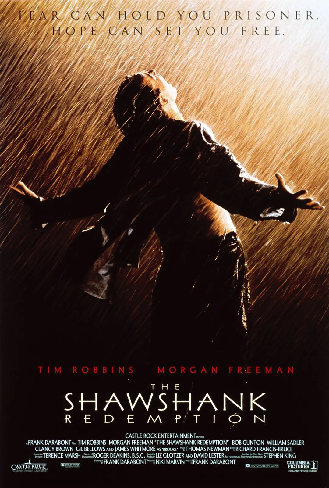
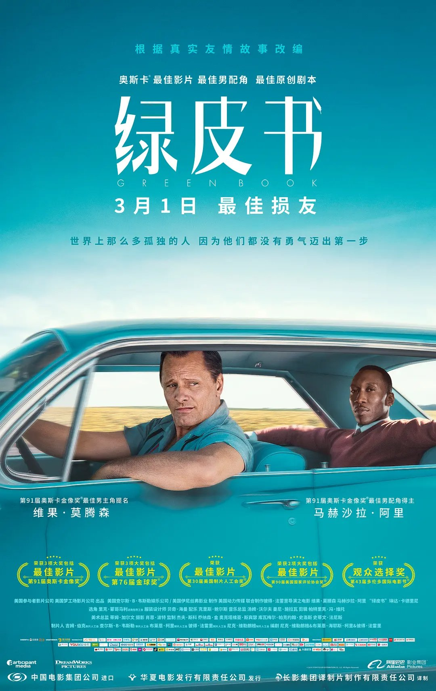

肖申克的救赎
The Shawshank Redemption (1994)

一场谋杀案使银行家安迪（蒂姆•罗宾斯 Tim Robbins 饰）蒙冤入狱，谋杀妻子及其情人的指控将囚禁他终生。在肖申克监狱的首次现身就让监狱“大哥”瑞德（摩根•弗里曼 Morgan Freeman 饰）对他另眼相看。瑞德帮助他搞到一把石锤和一幅女明星海报，两人渐成患难 之交。很快，安迪在监狱里大显其才，担当监狱图书管理员，并利用自己的金融知识帮助监狱官避税，引起了典狱长的注意，被招致麾下帮助典狱长洗黑钱。偶然一次，他得知一名新入狱的小偷能够作证帮他洗脱谋杀罪。燃起一丝希望的安迪找到了典狱长，希望他能帮自己翻案。阴险伪善的狱长假装答应安迪，背后却派人杀死小偷，让他唯一能合法出狱的希望泯灭。沮丧的安迪并没有绝望，在一个电闪雷鸣的风雨夜，一场暗藏几十年的越狱计划让他自我救赎，重获自由！老朋友瑞德在他的鼓舞和帮助下，也勇敢地奔向自由。
影片放映
挚爱台词
We sat and drank with the sun on our shoulders and felt like free men.
阳光撒肩头 仿若自由人
绿皮书
Green Book (2018)

托尼（维果·莫腾森 Viggo Mortensen 饰）是一个吊儿郎当游手好闲的混混，在一家夜总会做侍者。这间夜总会因故要停业几个月，可托尼所要支付的房租和生活费不会因此取消，所以他的当务之急是去寻找另一份工作来填补这几个月的空缺。在这个节骨眼上，一位名叫唐雪莉（马赫沙拉·阿里 Mahershala Ali 饰）的黑人钢琴家提出雇佣托尼。
唐雪莉即将开始为期八个星期的南下巡回演出，可是，那个时候南方对黑人的歧视非常的严重，于是托尼便成为了唐雪莉的司机兼保镖。一路上，两人迥异的性格使得他们之间产生了很多的矛盾，与此同时，唐雪莉在南方所遭受的种种不公平的对待也让托尼对种族歧视感到深恶痛绝。
唐雪莉即将开始为期八个星期的南下巡回演出，可是，那个时候南方对黑人的歧视非常的严重，于是托尼便成为了唐雪莉的司机兼保镖。一路上，两人迥异的性格使得他们之间产生了很多的矛盾，与此同时，唐雪莉在南方所遭受的种种不公平的对待也让托尼对种族歧视感到深恶痛绝。
影片放映
挚爱台词
And rich white people pay me to play piano for them, because it makes them feel cultured.
那些白人富翁花钱让我给他们弹钢琴，是想让自己显得有文化。
But as soon as I step off that stage, I go right back to being just another nigger to them.
但只要我一下台，我又变回了那个他们不屑一顾的黑鬼。
Because that is their true culture.
因为那才是他们真正的文化。
And I suffer that slight alone, because I’m not accepted by my own people, because I’m not like them either!
而我只能独自承受这种轻蔑，因为我不被自己人所接受，因为我跟他们也不是一类人！
So if I’m not black enough, and if I’m not white enough, and if I’m not man enough, then tell me, Tony.
如果我不够黑人，也不够白人，或者是不够男人，那请你告诉我，托尼。
What am I?
我到底是什么人？！